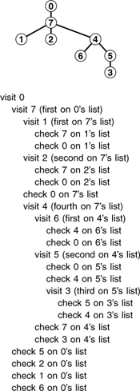
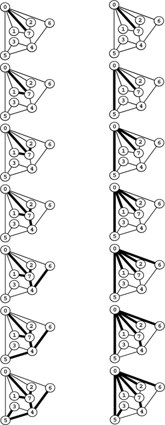
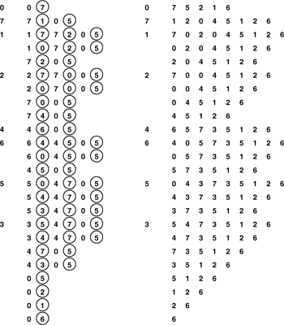
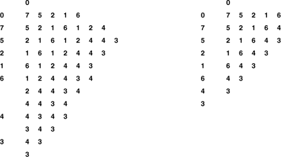
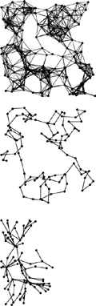

C++ Programming Robert Sedgewick - Princeton University Addison Wesley Professional Algorithms in C++, Parts 1–4: Fundamentals, Data Structure, Sorting, Searching, Third Edition C++ Programming Robert Sedgewick - Princeton University Addison Wesley Professional Algorithms in C++, Parts 1–4: Fundamentals, Data Structure, Sorting, Searching, Third Edition
5.8. Graph Traversal
For our final example of a recursive program in this chapter, we consider one of the most important of all recursive programs: recursive graph traversal, or depth-first search. This method for systematically visiting all the nodes in a graph is a direct generalization of the tree-traversal methods that we considered in Section 5.6, and it serves as the basis for many basic algorithms for processing graphs (see Part 7). It is a simple recursive algorithm. Starting at any node v, we
If the graph is connected, we eventually reach all of the nodes. Program 5.21 is an implementation of this recursive procedure.
For example, suppose that we use the adjacency-list representation depicted in the sample graph in Figure 3.15. Figure 5.32 shows the recursive calls made during the depth-first search of this graph, and the sequence on the left in Figure 5.33 depicts the way in which we follow the edges in the graph. We follow each edge in the graph, with one of two possible outcomes: if the edge takes us to a node that we have already visited, we ignore it; if it takes us to a node that we have not yet visited, we follow it there via a recursive call. The set of all edges that we follow in this way forms a spanning tree for the graph.
This sequence of function calls constitutes depth-first search for the example graph in Figure 3.15. The tree that depicts the recursive-call structure (top) is called the depth-first–search tree.

Depth-first search (left) moves from node to node, backing up to the previous node to try the next possibility whenever it has tried every possibility at a given node. Breadth-first search (right) exhausts all the possibilities at one node before moving to the next.

The difference between depth-first search and general tree traversal (see Program 5.14) is that we need to guard explicitly against visiting nodes that we have already visited. In a tree, we never encounter any such nodes. Indeed, if the graph is a tree, recursive depth-first search starting at the root is equivalent to preorder traversal.
Property 5.10. Depth-first search requires time proportional to V + E in a graph with V vertices and E edges, using the adjacency lists representation.|
In the adjacency lists representation, there is one list node corresponding to each edge in the graph, and one list head pointer corresponding to each vertex in the graph. Depth-first search touches all of them, at most once.
|
Program 5.21. Depth-first search|
To visit all the nodes connected to node k in a graph, we mark it as visited, then (recursively) visit the all unvisited nodes on k's adjacency list.
void traverse(int k, void visit(int))
{ visit(k); visited[k] = 1;
for (link t = adj[k]; t != 0; t = t->next)
if (!visited[t->v]) traverse(t->v, visit);
}
|
Because it also takes time proportional to V + E to build the adjacency lists representation from an input sequence of edges (see Program 3.19), depth-first search gives us a linear-time solution to the connectivity problem of Chapter 1. For huge graphs, however, the union–find solutions might still be preferable, because representing the whole graph takes space proportional to E, while the union–find solutions take space only proportional to V.
As we did with tree traversal, we can define a graph-traversal method that uses an explicit stack, as depicted in Figure 5.34. We can think of an abstract stack that holds dual entries: a node and a pointer into that node's adjacency list. With the stack initialized to the start node and a pointer initialized to the first node on that node's adjacency list, the depth-first search algorithm is equivalent to entering into a loop, where we visit the node at the top of the stack (if it has not already been visited); save the node referenced by the current adjacency-list pointer; update the adjacency list reference to the next node (popping the entry if at the end of the adjacency list); and push a stack entry for the saved node, referencing the first node on its adjacency list.
We can think of the pushdown stack supporting depth-first search as containing a node and a reference to that node's adjacency list (indicated by a circled node) (left). Thus, we begin with node 0 on the stack, with reference to the first node on its list, node 7. Each line indicates the result of popping the stack, pushing a reference to the next node on the list for nodes that have been visited, and pushing an entry on the stack for nodes that have not been visited. Alternatively, we can think of the process as simply pushing all nodes adjacent to any unvisited node onto the stack (right).

Alternatively, as we did for tree traversal, we can consider the stack to contain links to nodes only. With the stack initialized to the start node, we enter into a loop where we visit the node at the top of the stack (if it has not already been visited), then push all the nodes adjacent to it onto the stack. Figure 5.34 illustrates that both of these methods are equivalent to depth-first search for our example graph, and the equivalence indeed holds in general.
The visit-the-top-node-and-push-all-its-neighbors algorithm is a simple formulation of depth-first search, but it is clear from Figure 5.34 that it suffers the disadvantage of possibly leaving multiple copies of each node on the stack. It does so even if we test whether each node that is about to go on the stack has been visited and refrain from putting the node in the stack if it has been. To avoid this problem, we can use a stack implementation that disallows duplicates by using a forget-the-old-item policy, because the copy nearest the top of the stack is always the first one visited, so the others are simply popped.
The stack dynamics for depth-first search that are illustrated in Figure 5.34 depend on the nodes on each each adjacency list ending up on the stack in the same order that they appear in the list. To get this ordering for a given adjacency list when pushing one node at a time, we would have to push the last node first, then the next-to-last node, and so forth. Moreover, to limit the stack size to the number of vertices while at the same time visiting the nodes in the same order as in depth-first search, we need to use a stack discipline with a forget-the-old-item policy. If visiting the nodes in the same order as depth-first search is not important to us, we can avoid both of these complications and directly formulate a nonrecursive stack-based graph-traversal method: With the stack initialized to the start node, we enter into a loop where we visit the node at the top of the stack, then proceed through its adjacency list, pushing each node onto the stack (if the node has not been visited already), using a stack implementation that disallows duplicates with an ignore-the-new-item policy. This algorithm visits all the nodes in the graph in a manner similar to depth-first-search, but it is not recursive.
Program 5.22. Breadth-first search|
To visit all the nodes connected to node k in a graph, we put k onto a FIFO queue, then enter into a loop where we get the next node from the queue, and, if it has not been visited, visit it and push all the unvisited nodes on its adjacency list, continuing until the queue is empty.
void traverse(int k, void visit(int))
{
QUEUE<int> q(V*V);
q.put(k);
while (!q.empty())
if (visited[k = q.get()] == 0)
{
visit(k); visited[k] = 1;
for (link t = adj[k]; t != 0; t = t->next)
if (visited[t->v] == 0) q.put(t->v);
}
}
|
The algorithm in the previous paragraph is noteworthy because we could use any generalized queue ADT, and still visit each of the nodes in the graph (and generate a spanning tree). For example, if we use a queue instead of a stack, then we have breadth-first search, which is analogous to level-order traversal in a tree. Program 5.22 is an implementation of this method (assuming that we use a queue implementation like Program 4.12); an example of the algorithm in operation is depicted in Figure 5.35. In Part 6, we shall examine numerous graph algorithms based on more sophisticated generalized queue ADTs.
We start with 0 on the queue, then get 0, visit it, and put the nodes on its adjacency list 7 5 2 1 6, in that order onto the queue. Then we get 7, visit it, and put the nodes on its adjacency list, and so forth. With duplicates disallowed with an ignore-the-new-item policy (right), we get the same result without any extraneous queue entries.

Breadth-first search and depth-first search both visit all the nodes in a graph, but their manner of doing so is dramatically different, as illustrated in Figure 5.36. Breadth-first search amounts to an army of searchers fanning out to cover the territory; depth-first search corresponds to a single searcher probing unknown territory as deeply as possible, retreating only when hitting dead ends. These are basic problem-solving paradigms of significance in many areas of computer science beyond graph searching.
This diagram shows depth-first search (center) and breadth-first search (bottom), halfway through searching in a large graph (top). Depth-first search meanders from one node to the next, so most nodes are connected to just two others. By contrast, breadth-first search sweeps through the graph, visiting all the nodes connected to a given node before moving on, so several nodes are connected to many others.

Exercises | 5.92 Show how recursive depth-first search visits the nodes in the graph built for the edge sequence 0-2, 1-4, 2-5, 3-6, 0-4, 6-0,and 1-3 (see Exercise 3.70), by giving diagrams corresponding to Figures 5.33 (left) and 5.34 (right). | | 5.93 Show how stack-based depth-first search visits the nodes in the graph built for the edge sequence 0-2, 1-4, 2-5, 3-6, 0-4, 6-0, and 1-3, by giving diagrams corresponding to Figures 5.33 (left) and 5.34 (right). | | 5.94 Show how (queue-based) breadth-first search visits the nodes in the graph built for the edge sequence 0-2, 1-4, 2-5, 3-6, 0-4, 6-0, and 1-3, by giving diagrams corresponding to Figures 5.33 (right) and 5.35 (left). | |  5.95 Why is the running time in Property 5.10 quoted as V + E and not simply E? 5.95 Why is the running time in Property 5.10 quoted as V + E and not simply E?
| | | | 5.96 Show how stack-based depth-first search visits the nodes in the example graph in the text (Figure 3.15) when using a forget-the-old-item policy, by giving diagrams corresponding to Figures 5.33 (left) and 5.35 (right). | | 5.97 Show how stack-based depth-first search visits the nodes in the example graph in the text (Figure 3.15) when using an ignore-the-new-item policy, by giving diagrams corresponding to Figures 5.33 (left) and 5.35 (right). | |  5.98 Implement a stack-based depth-first search for graphs that are represented with adjacency lists. 5.98 Implement a stack-based depth-first search for graphs that are represented with adjacency lists.
| | 5.99 Implement a recursive depth-first search for graphs that are represented with adjacency lists. |
|